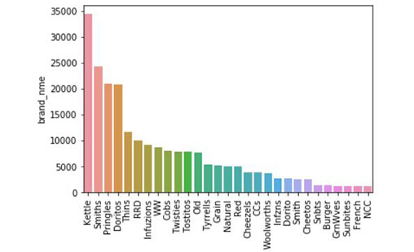

I am an Electrical Engineering undergrad having an inclination towards Machine Learning. This field has
so much captivated me because with the use of Machine Learning and AI we can ease lives and change the way living.
To pursue my interest, I have done courses from IBM and Stanford University and
gained skills in Machine Learning, Data analysis, Deep Learning and Neural Networks. I have also done
various projects to apply my skills in this field.

Built a custom object detection model to detect 4 different sign language gestures in real-time. Used TensorFlow Object Detection API to build the model. Deployed the model in the IBM bucket which can be accessed through the browser.

Built a Face Recognition system to detect and recognize faces in real-time. An Attendance project was also built alongside which enters the name of the person along with the time in excel sheet.

BA Virtual Paint project was built to detect 3 different colours and draw on the screen in real-time. Trackbars was built using OpenCV to determine the hue and saturation of various colours, so that the model can be trained to detect different colours.
Built a tool to predict the final bid price in an online auction. Used three different models and tuned the hyperparameters using GridSearchCV. The models were evaluated using MAE and the best result was given by Random Forest regressor.

Performed Data analysis on the product and customer data. Used various data visualization tools and interactive Plotly tool to be able to explain the analysis properly. Used K-Means clustering to segment different customer clusters.
Institutions and administrators regularly have to make difficult choices about how best to invest resources to serve students; Performed data analysis over the dataset containing the institution's details, and K-Means was used to form different clusters.
Built a tool to suggest various anime according to the viewer's profile over OTT platforms. A content-based algorithm was built from scratch using the anime properties. Random user input was used to find the user's interest and to give the recommendation.
l